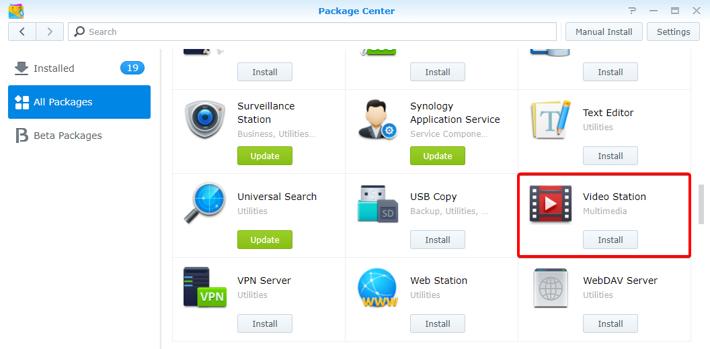

Vue d'ensemble
Avec Video Station, vous pouvez facilement organiser et classer vos collections de vidéos en différentes bibliothèques par défaut ou personnalisées afin de pouvoir retrouver la vidéo que vous souhaitez de manière beaucoup plus efficace. En outre, la lecture et le partage de vidéos peut également se faire de manière très simple et directe, en quelque clics.
1. Installation de Video Station
Pour installer Video Station, accédez à Centre de paquets, recherchez Video Station, puis cliquez sur Installer.
2. Stockage et classement de vidéo dans les bibliothèques par défaut
Video Station vous offre trois bibliothèques par défaut, comme illustré dans le volet de gauche : Film, Émission de télévision et Vidéo personnelle. Pour vous assurer que vos vidéos peuvent être correctement indexées et classées, vous devez ajouter des dossiers de vidéos pour chaque bibliothèque, puis stocker d'abord vos fichiers dans les dossiers de vidéo correspondants. Par défaut, trois dossiers vidéo ont été créés dans le dossier partagé video pour trois bibliothèques par défaut : movie, TV show et home video. Toutefois, en plus de ces trois dossiers, vous pouvez également effectuer ce qui suit pour ajouter davantage de dossiers de vidéos pour les bibliothèques.
Le système recherchera automatiquement les métadonnées correspondantes et les autres informations (par ex., images de posters) pour deux types de vidéo (film et émission de télévision) sur Internet. Donc, pour assurer le bon jumelage de vos vidéos et des informations appropriées, il est vivement recommandé que les vidéos correspondent aux types spécifiés de vidéo des bibliothèques respectives.
Ajouter des dossiers de vidéos pour les bibliothèques par défaut
- Sélectionnez Paramètres > Bibliothèque.
- Cliquez sur l'icône Ajouter un dossier pour choisir un dossier sur votre Synology NAS, et sélectionnez la bibliothèque de destination. Vous pouvez ajouter jusqu'à 100 dossiers de vidéos pour une bibliothèque, mais une fois qu'un dossier est sélectionné, ni le dossier ni ses sous-dossiers ne peuvent être sélectionnés pour une autre bibliothèque.
- Stockez les fichiers de vidéos dans les dossiers vidéo pour classer les vidéos dans des bibliothèques correspondantes.
- Vous pouvez maintenant parcourir et regarder les vidéos de votre choix à partir des bibliothèques.


3. Stockage et classement de vidéo dans les bibliothèques personnalisées
En plus des trois bibliothèques par défaut auxquelles tout le monde peut accéder par défaut, vous pouvez, en tant qu'administrateur DSM ou des utilisateurs appartenant au groupe administrators, créer des bibliothèques personnalisées et affecter des droits d'accès à des utilisateurs.
Création de bibliothèques personnalisées
- Sélectionnez Paramètres > Bibliothèque, et cliquez sur l'icône du signe plus pour créer une bibliothèque.
- Indiquez un nom pour la nouvelle bibliothèque, sélectionnez le type de vidéo que vous souhaitez mettre dans le dossier et choisissez Public si vous souhaitez que la bibliothèque soit accessible par tout le monde, ou Privé pour en limiter l'accès à des utilisateurs disposant d'autorisations. Veuillez noter que les vidéos que vous placez dans le dossier doivent correspondre aux types sélectionnés ici pour assurer la précision des informations vidéos collectées depuis Internet.
- Si vous choisissez Privé, cliquez sur Attribuer des permissions, et cochez les cases pour octroyer l'accès aux utilisateurs.

4. Lire des vidéos
Lorsque vous avez classé vos fichiers vidéo dans les différentes bibliothèques, vous pouvez suivre les étapes ci-dessous pour lire les vidéos sur Video Station. Il est vivement recommandé d'installer préalablement le lecteur multimédia VLC (Windows, Linux) sur votre ordinateur. En plus de lire les vidéos sur votre ordinateur local, vous pouvez également diffuser vos vidéos vers les DMA compatibles DLNA/UPnP ou les appareils AirPlay pour la lecture vidéo.
Lecture de vidéos à l'aide du lecteur vidéo intégré
- Sélectionnez un clip vidéo que vous souhaitez voir, puis cliquez sur l'icône de lecture sur l'image de la vidéo.
- La lecture de la vidéo doit commencer immédiatement. Sinon, assurez-vous que le format de votre vidéo est pris en charge par votre navigateur Web, ou que vous avez installé le plug-in VLC sur votre ordinateur.
- Utilisez les boutons à l'écran et la barre de progression en bas du lecteur vidéo en fonction de vos besoins. Vous pouvez également régler le volume, sélectionner la qualité de la lecture et la piste audio, afficher ou non les sous-titres ou diffuser la vidéo sur un autre périphérique (le cas échéant).


Pour des informations détaillées sur le plug-in VLC et les périphériques pris en charge, reportez-vous à Aide DSM > Video Station > Lecture de vidéo.
5. Partage de vidéos avec le Public
Grâce à la fonction de partage public, vous pouvez facilement partager vos vidéos avec d'autres personnes grâce à Video Station et toutes les vidéos partagées sont publiquement accessibles par toute personne disposant d'un lien.
Partage de vidéos avec d'autres personnes
- Accédez à n'importe quelle bibliothèque des vidéos et cliquez sur Tout dans le coin supérieur gauche pour lire toutes les vidéos de la bibliothèque.
- Cliquez sur l'icône Choix du mode vous appuyez de manière prolongée sur Ctrl ou Maj pour sélectionner plusieurs vidéos. Puis, cliquez sur l'icône Partage public.
- Si vous avez sélectionné seulement une vidéo unique à partager, la vidéo sera ajoutée à une collection partagée nommée Vidéos partagées. Ici, vous pouvez gérer toutes les vidéos que vous avez partagés un par un.
- Si vous avez sélectionné plusieurs vidéos à partager, les vidéos seront groupées en une nouvelle collection partagée.
- Le cas échéant, spécifiez une période de validité.
- Vous pouvez également cliquer sur l'icône plus dans l'image de la vidéo cible et cliquer sur Partage public pour ajouter la vidéo sélectionnée aux Vidéos partagées.
- Copiez et collez simplement le lien dans les e-mails, les messages instantanés et les pages web pour partager les vidéos avec tout le monde.


6. Organisations et visionnage des vidéos sur des périphériques mobiles
Pour vous connecter à Video Station via des appareils mobiles, vous pouvez télécharger DS video avec des appareils iOS/Android grâce aux codes QR ci-dessous et organiser vos collections sur vos périphériques mobiles ou diffuser des vidéos sur vos périphériques DMA ou AirPlay, à la maison et en déplacement.